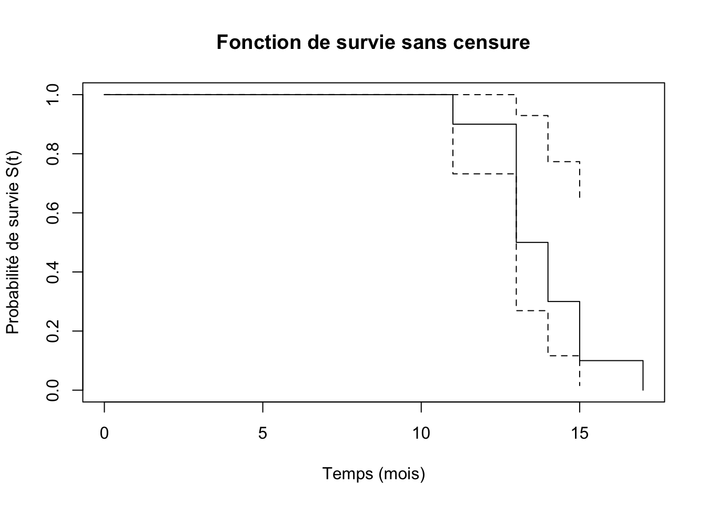
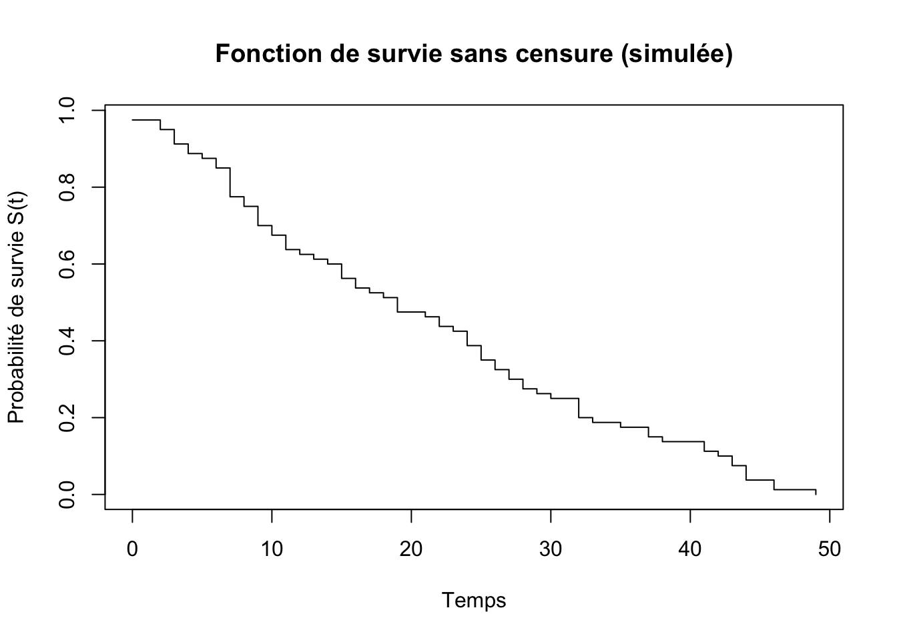
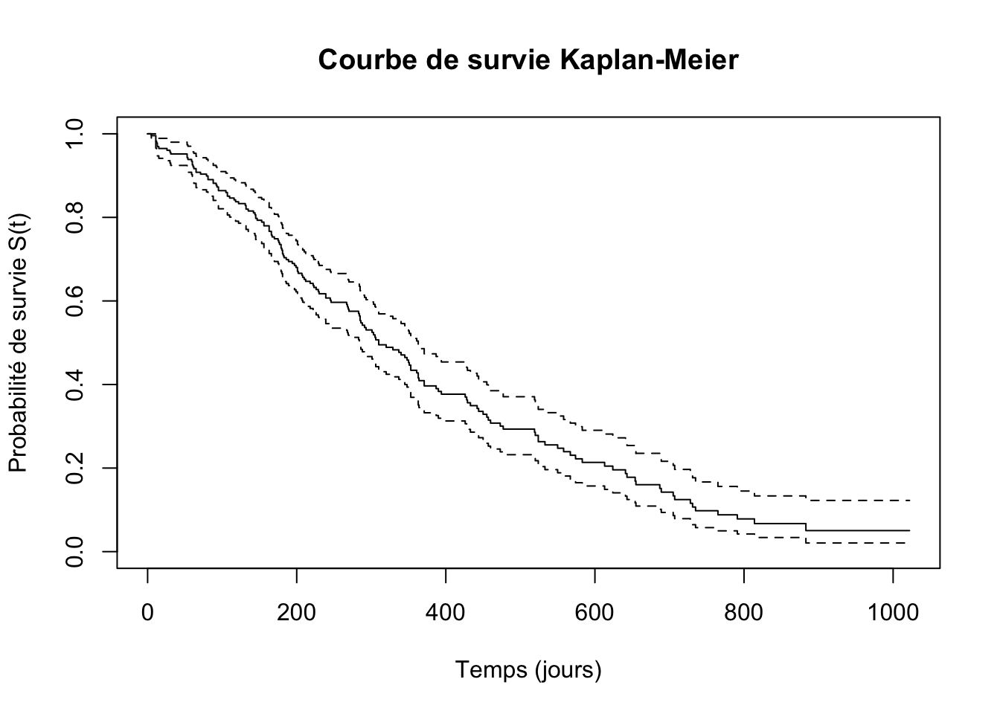
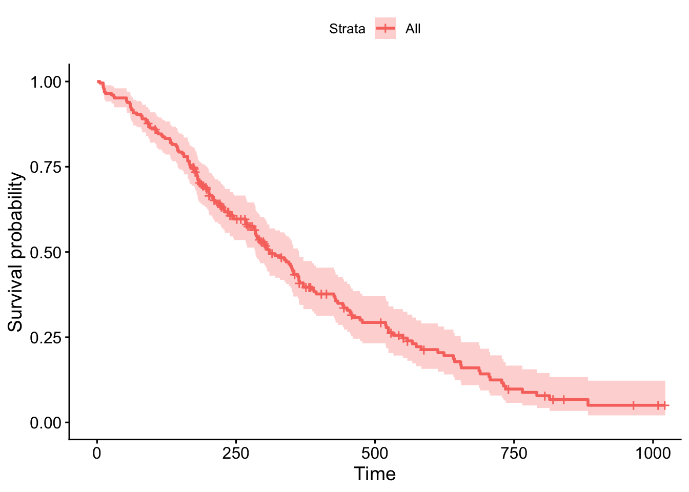
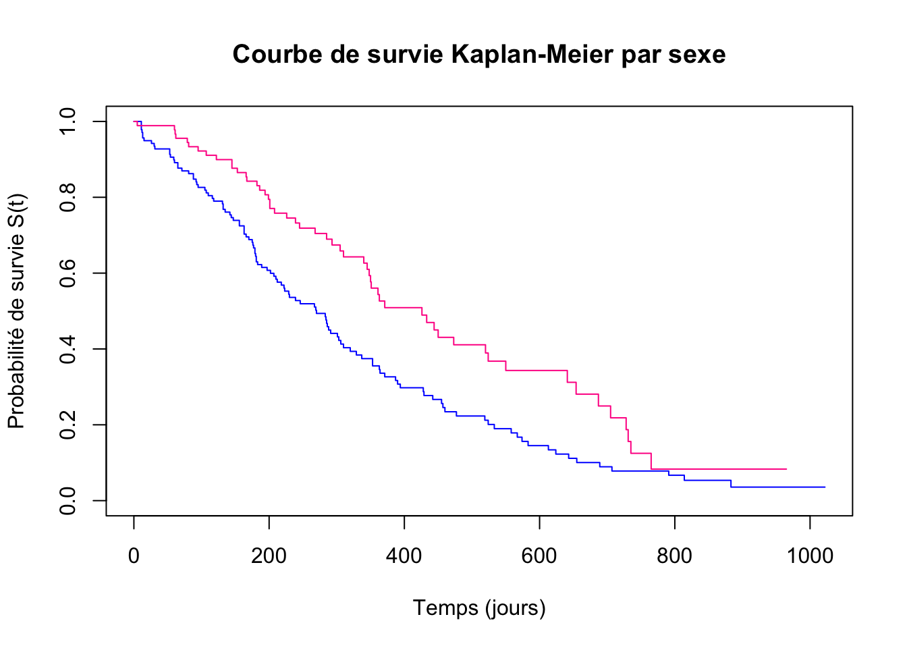

Estimation de la fonction de survie : estimateur de Kaplan-Meier
Comparaison de fonctions de survie : test du log-rank
Modélisation de la survie : modèle de Cox
2 Introduction
Donnée censuré ≠ donnée manquante :
Censurée : on sait que l’événement d’intérêt n’est pas survenu avant un certain temps (par ex : pas de récidive jusqu’à la perte de vue)
Manquante : on ne sait pas si l’événement d’intérêt est survenu ou non
2.1 Données de survie
Donnée de survie = survival time ou time to event data
Définition : délai de survenue d’un événement d’intérêt (endpoint event) à partir d’un temps de départ (souvent le temps 0)
Correspond à tout délai entre deux dates d’intérêt =
Censure à gauche : point de départ !
Censure à droite : événement non survenu avant la fin de l’étude
2.2 Problème de la censure
certains ne présentent pas l’événement d’intérêt pendant la période d’étude
tous les patients n’ont pas le même temps d’observation
On aimerait observer \(T_i\) = délai jusqu’à l’événement d’intérêt pour chaque individu \(i\).
Mais on observe en fait :
\(min(T_i, C)\) et \(1_{T_i > C}\) c’est à dire que :
\(min(T_i, C)\) : on cherche la plus petite valeur entre le délai jusqu’à l’événement d’intérêt \(T_i\) et une durée d’observation maximale fixe \(C\)
\(1_{T_i > C}\) : 1 à chaque fois que \(T_i\) est supérieur à \(C\) (censure à droite) = c’est à dire que l’événement n’est pas survenu avant la fin de l’étude
0 sinon : si l’évènemet est survenu avant la censure
ou \(min(T_i, C_i)\), \(1_{T_i > C_i}\)
C : durée d’observation maximale fixe
C_i : durée d’observation variable selon les individus = censure aléatoire
Information partielle = censure à droite.
Par exemple :
C = 3 ans (censure à 3 ans pour tous les individus)
\(T_i\) = délai jusqu’à la récidive pour le patient i
Si le patient i récidive à 2 ans : on observe \(min(2, 3) = 2\) et \(1_{2 > 3} = 0\) (événement observé avant la censure)
Si le patient i ne récidive pas avant 3 ans : on observe \(min(T_i, 3) = 3\) et \(1_{T_i > 3} = 1\) (événement non observé avant la censure)
Tip
En gros : il faut différencier
les individus pour lesquels on observe l’événement d’intérêt avant la date de censure (on connaît leur temps de survie exact, parce qu’ils “n’ont pas survécu” jusqu’à la censure)
les individus pour lesquels on ne sait pas si l’événement d’intérêt est survenu ou non avant la date de censure (on sait juste qu’ils ont “survécu” jusqu’à la censure)
Donc colonnes dans la BDD pour le critère de survie :
L’ÉVÈNEMENT :
Survenue ou non (0/1)
Date et délai par rapport au temps de départ
DURÉE DE SUIVI
Indépendante de la survenue ou non de l’événement d’intérêt
Depuis de le temps de départ
3 Données de survie
3.1 Modélisation satistique
Analyse statistique dépend de la question de recherche :
Est-ce que l’évènement s’est produit (pendant la période d’étude) ? = modèle binaire = régression logistique
Quand l’évènement s’est-il produit ? = modèle de survie = régression de Cox
3.2 Applications
Essai thérapeutique : comparer l’efficacité de deux interventions revient à comparer les durées de survie après intervention dans les deux groupes
Étude épidémiologique : estimation de l’association entre un facteur de risque et la durée de survie ou le temps de survenue d’une maladie
3.3 Terminologie
Date d’origine : point de départ, varie selon patient, pour le calcul des durées de survie (ex : date de diagnostic, date de traitement, date d’inclusion dans l’étude)
Date des dernières nouvelles : date de la dernière information connue sur le patient (ex : date de décès, date de la dernière consultation, date de la fin de l’étude)
Date de point : commune à tous les patients, pour le calcul des durées de survie (ex : date de fin de l’étude)
Censure : information incomplète, l’événement d’intérêt n’est pas survenu avant la date de point
Temps de participation : variable d’étude
Évènement avant date de point (décès, récidive, etc.) : temps de participation = délai entre date d’origine et date de l’événement
Pas d’évènement avant date de point (censure) :
La date des dernières nouvelles est antérieure à la date de point : perdus de vue
La date des dernières nouvelles est égale à la date de point : censure administrative
3.4 Ce qui est nécessaire
Pour chaque sujet, on doit disposer de :
Temps de participation (délai entre date d’origine et date de l’événement ou date des dernières nouvelles)
État de l’événement (1 = événement survenu, 0 = censuré) à la fin du temps de participation
3.4.1 Exercice
Suivi :
Patient 1 : 30 jours (évènement à 35 jours)
Patient 2 : 24 jours (évènement à 24 jours)
3.5 Loi de probabilité de T
Loi de probabilité de T = délai jusqu’à l’évenement (non observée)
Décrite par l’une de ces fonctions :
Densité de probabilité, \(f(t)\)
Fonction de répartition, \(F(t)\)
Fonction de survie, \(S(t)\)
Fonction de risque instantané, \(h(t)\)
Fonction de risque cumulée, \(H(t)\)
3.5.1Densité de probabilité
\(f(t)\) = \(\lim_{\Delta t \to 0} \frac{P(T < t + \Delta t) - P(T < t)}{\Delta t}\)
\(lim_{\Delta t \to 0}\) : signifie que l’on regarde un intervalle de temps de plus en plus petit autour de t (on réduit l’intervalle \(\Delta t\) jusqu’à ce qu’il tende vers 0).
\(T\) : variable aléatoire représentant le délai jusqu’à l’événement d’intérêt = moment où l’événement se produit.
\(t\) : moment spécifique dans le temps où l’on évalue la densité de probabilité.
\(P(T < t)\) : probabilité que l’événement d’intérêt \(T\) se produise avant le temps \(t\).
On calcule la densité de probabilité \(f(t)\) en prenant la limite lorsque l’intervalle de temps \(\Delta t\) autour de \(t\) devient très petit. Cela nous permet d’estimer la probabilité que l’événement \(T\) se produise précisément à ce moment \(t\).
En gros :
Différence entre :
La probabilité que l’évènement \(T\) se produise avant un certain temps \(t + \Delta t\) (un intervalle de temps très petit autour de \(t\))
et la probabilité que l’évènement \(T\) se produise avant un certain temps \(t\)
Diviser le résultat par la taille de l’intervalle de temps \(\Delta t\)
On obtient ainsi un “taux moyen” de probabilité par unité de temps dans cet intervalle très petit autour de \(t\)
En prenant la limite lorsque \(\Delta t\) tend vers 0, on obtient la densité de probabilité instantanée
3.5.2 Fonction de répartition
Probabilité que la variable aléatoire \(T\) prenne une valeur inférieure ou égale à une quantité \(t\) :
\(F(t) = P(T \leq t) = \int_{0}^{t} f(u) du\)
\(F(t)\) : fonction de répartition, qui donne la probabilité que l’événement d’intérêt \(T\) se produise avant ou à un moment spécifique \(t\).
\(P(T \leq t)\) : probabilité que l’événement \(T\) se produise avant ou à temps \(t\).
\(\int_{0}^{t} f(u) du\) : intégrale de la densité de probabilité \(f(u)\) de 0 à \(t\), qui calcule la probabilité cumulative jusqu’à ce moment.
Propriétés :
Fonction croissante (plus on attend, plus la probabilité que l’événement se soit produit augmente)
La vitesse de croissance dépend de la densité de probabilité \(f(t)\) = caractérise la loi de la variable aléatoire \(T\)
\(F(0) = 0\) : si on n’attend pas, la probabilité de voir l’évènement = 0
\(\lim_{t \to \infty} F(t) = 1\) : si on attend indéfiniment, la probabilité de voir l’évènement = 1
\(F\) dérivable et \(F'=f\) avec \(f\) la densité de probabilité (la dérivée de la fonction de répartition = la fonction de densité).
3.5.3 Fonction de survie
Représente la fraction d’individus encore en vie en \(t\).
Fonction décroissante (plus on attend, plus la probabilité de survie diminue)
La vitesse de décroissance dépend de la densité de probabilité \(f(t)\) = caractérise la loi de la variable aléatoire \(T\)
\(S(0) = 1\) : si on n’attend pas, la probabilité de survie = 1
\(\lim_{t \to \infty} S(t) = 0\) : si on attend indéfiniment, la probabilité de survie = 0
\(S\) dérivable et \(S'=-f\) avec \(f\) la densité de probabilité (la dérivée de la fonction de survie = l’opposé de la fonction de densité).
3.5.4 Fonction de risque instantané
Définition : fonction de “hazard” ou “hasard”. Représente le risque instantané de survenue de l’événement à l’instant \(t\), conditionnellement au fait que l’individu ait survécu jusqu’à ce temps \(t\).
Densité “conditionnelle” de l’événement à l’instant \(t\) sachant que l’individu est encore en vie à ce moment.
\(h(t) = \lim_{\Delta t \to 0} \frac{P(t \leq T < t + \Delta t \mid T \geq t)}{\Delta t}\)
NB : la barre verticale “\(|\)” signifie “conditionnellement à”.
\(h(t)\) : fonction de risque instantané, qui mesure le risque de survenue de l’événement d’intérêt à un moment spécifique \(t\), conditionnellement au fait que l’individu ait survécu jusqu’à ce temps \(t\).
\(P(t \leq T < t + \Delta t \mid T \geq t)\) :
probabilité que l’événement \(T\) se produise dans l’intervalle de temps entre \(t\) et \(t + \Delta t\),
conditionnellement au fait que l’individu ait survécu jusqu’à temps \(t\).
\(\Delta t\) : intervalle de temps très petit autour de \(t\).
\(\lim_{\Delta t \to 0}\) : signifie que l’on regarde un intervalle de temps de plus en plus petit autour de t (on réduit l’intervalle \(\Delta t\) jusqu’à ce qu’il tende vers 0).
Permet d’obtenir un taux instantané de risque à ce moment précis \(t\).
Sinon, on obtiendrait une moyenne sur un intervalle de temps plus large.
En résumé : c’est une densité conditionnelle qui mesure le risque instantané de survenue de l’événement à un moment spécifique \(t\), en tenant compte du fait que l’individu a déjà survécu jusqu’à ce temps \(t\) ET NE L’A PAS ENCORE PRÉSENTÉ !
On peut représenter plus simplement la fonction en :
C’est à dire que la fonction de risque instantané est le rapport entre la densité de probabilité et la fonction de survie.
C’est logique ! parce que :
Fonction de densité \(f(t)\) : probabilité que l’événement se produise précisément à l’instant \(t\)
Fonction de survie \(S(t)\) : probabilité que l’individu soit encore en vie à temps \(t\) (donc n’ait pas encore présenté l’événement)
Donc le rapport \(f(t)/S(t)\) : probabilité que l’événement se produise à l’instant \(t\) sachant que l’individu est encore en vie à ce moment.
Le signe négatif dans \(-\frac{S'(t)}{S(t)}\) vient du fait que la dérivée de la fonction de survie \(S'(t)\) est négative (puisque \(S(t)\) est décroissante). Donc en prenant l’opposé, on obtient une valeur positive pour la fonction de risque instantané.
3.5.5 Fonction de risque cumulée
Représente le risque cumulé de survenue de l’événement jusqu’au temps \(t\).
\(H(t) = \int_{0}^{t} h(u) du\)
Propriétés :
Fonction croissante (plus on attend, plus le risque cumulé augmente)
La vitesse de croissance dépend de la densité de probabilité \(f(t)\) = caractérise la loi de la variable aléatoire \(T\)
\(H(0) = 0\) : si on n’attend pas, le risque cumulé = 0
\(\lim_{t \to \infty} H(t) = \infty\) : si on attend indéfiniment, le risque cumulé = infini
3.5.6 Relations entre les fonctions
Fonction
Notation
Définition
Densité de probabilité
\(f(t)\)
\(\lim_{\Delta t \to 0} \frac{P(t < T < t + \Delta t)}{\Delta t}\)
\(\lim_{\Delta t \to 0} \frac{P(t \leq T < t + \Delta t \mid T \geq t)}{\Delta t}\)
Fonction de risque cumulée
\(H(t)\)
\(\int_{0}^{t} h(u) du\)
\(P(t < T < t + \Delta t) = P(t < T < t+ \Delta t \mid T > t) \times P(T > t)\)
\(P(t < T < t + \Delta t)\) = la probabilité que l’événement se produise dans l’intervalle de temps entre \(t\) et \(t + \Delta t\).
Mais en fait 2 probabilités en une :
probabilité que l’individu soit encore en vie au temps \(t\) : \(P(T > t)\) = la probabilité que l’individu ait survécu jusqu’à temps \(t\) (donc n’ait pas encore présenté l’événement avant \(t\)). NB : c’est la fonction de survie\(S(t)\)
probabilité que l’événement se produise dans l’intervalle de temps entre \(t\) et \(t + \Delta t\) PARMI LES INDIVIDUS ayant survécu jusqu’à temps \(t\) : \(P(t \leq T < t + \Delta t \mid T \geq t)\). NB : c’est la fonction de risque instantané\(h(t)\) multipliée par la taille de l’intervalle \(\Delta t\)
Et sachant que :
\(f\) = densité de probabilité = \(\lim_{\Delta t \to 0} \frac{P(t < T < t + \Delta t)}{\Delta t}\)
\(h\) = fonction de risque instantané = \(\lim_{\Delta t \to 0} \frac{P(t \leq T < t + \Delta t \mid T \geq t)}{\Delta t}\)
\(S\) = fonction de survie = \(P(T > t)\)
donc on en déduit :
\(f(t) = h(t) \times S(t)\)
Et sachant que :
\(f\) = densité de probabilité = \(-S'(t)\)
\(S\) = fonction de survie = \(1 - F(t)\) = \(e^{-H(t)}\) car \(H(t) = -\ln(S(t))\)
En résumé :
Fonction
Notation
Relation avec les autres fonctions
Densité de probabilité
\(f(t)\)
\(f(t) = h(t) \times S(t)\)
Fonction de répartition
\(F(t)\)
\(F(t) = 1 - S(t)\)
Fonction de survie
\(S(t)\)
\(S(t) = e^{-H(t)}\)
Fonction de risque instantané
\(h(t)\)
\(h(t) = \frac{f(t)}{S(t)}\)
Fonction de risque cumulée
\(H(t)\)
\(H(t) = -\ln(S(t))\)
4 Estimation d’une courbe de survie : estimateur de Kaplan-Meier
4.1 Objectif de l’analyse de survie
Estimer le délai médian avant la survenue de l’événement d’intérêt
Comparer ce délai entre plusieurs groupes de patients
Étudier l’effet de variables explicatives sur ce délai
4.2 Approches
Approche paramétrique : modélisation de la fonction de risque = on fait une hypothèse sur la forme de la fonction de risque (ex : loi exponentielle)
Approche non paramétrique : estimation de la fonction de survie sans faire d’hypothèse sur la forme de la fonction de risque = estimateur de Kaplan-Meier
Approche semi-paramétrique : modèle multivarié : modélisation de l’effet des variables explicatives sur la fonction de risque sans faire d’hypothèse sur la forme de la fonction de risque = modèle de Cox
4.2.1 Estimation en absence de censure
En l’absence de censure, on remplace la probabilité théorique par une proportion basée sur les données observées.
Estimateur de la fonction de répartition\(F(t)\) à partir des données observées
\(1_{(T_i \leq t)}\) = indicatrice qui vaut 1 si \(T_i \leq t\) (si l’évènement \(T\) a eu lieu avant \(t\)) et 0 sinon.
\(\sum_{i=1}^n 1_{(T_i \le t)}\) = somme des 0 et des 1 pour tous les individus = nombre d’individus ayant présenté l’évènement avant \(t\).
diviser le tout par le nombre total d’individus \(n\) permet d’obtenir la proportion d’individus ayant présenté l’évènement avant \(t\).
Donc \(\hat{F}(t)\) = estimateur empirique = proportion d’individus ayant présenté l’évènement avant \(t\) dans la population étudiée
\(\hat{F}(t)\) est un estimateur de la fonction de répartition \(F(t)\), qui serait la proportion “vraie” d’individus ayant présenté l’évènement avant \(t\) dans la population générale / idéale
Fonction en escalier, monotone, croissante de 0 à 1
Estimateur de la fonction de survie\(S(t)\) = \(1 - \hat{F}(t)\)
\(1_{(T_i > t)}\) = indicatrice qui vaut 1 si \(T_i > t\) (si l’évènement \(T\) a eu lieu après \(t\)) et 0 sinon.
\(\sum_{i=1}^n 1_{(T_i > t)}\) = somme des 0 et des 1 pour tous les individus = nombre d’individus n’ayant pas présenté l’évènement avant \(t\) (ayant survécu au delà de \(t\)).
diviser le tout par le nombre total d’individus \(n\) permet d’obtenir la proportion d’individus n’ayant pas présenté l’évènement avant \(t\) (ayant survécu au delà de \(t\)).
Donc \(\hat{S}(t)\) = estimateur empirique = proportion d’individus n’ayant pas présenté l’évènement avant \(t\) (ayant survécu au delà de \(t\)) dans la population étudiée
= \(\hat{S}(t) = \frac{\text{Nombre d'individus survivant au dela de } t}{\text{Nombre total d'individus}}\)
Fonction en escalier, monotone, décroissante de 1 à 0.
4.2.1.1 Exemple
Données = temps de décès (en mois) de 10 patients :
13, 13, 14, 13, 15, 11, 17, 13, 14, 15
Estimation de la fonction de survie
Estimateur de \(S(t)\) = \(1 - {F}(t)\)
\(\hat{S}(t) = \frac{1}{n} \sum_{i=1}^{n} 1_{(T_i > t)} = \frac{\text{Nombre d'individus survivant au dela de } t}{\text{Nombre total d'individus}}\)
en tableau :
Premier décès à 11 mois, compté dans l’intervalle 11 - 12 par convention.
t
Nb décès
Nb décès cumulé
\(\hat{S}(t)\)
0
0
0
10/10 = 1.0
11
1
1
9/10 = 0.9
13
4
5
5/10 = 0.5
14
2
7
3/10 = 0.3
15
2
9
1/10 = 0.1
17
1
10
0/10 = 0.0
Tracé de la fonction de survie sans Kaplan Meier
library(survival)# 1) Données temps <-c(13, 13, 14, 13, 15, 11, 17, 13, 14, 15)# Comme il n'y a PAS de censure : event = 1 pour tout le mondeevent <-rep(1, length(temps))# Objet Survsurv_object <-Surv(time = temps, event = event)# 2) Estimation de la fonction de surviesurv_fit <-survfit(surv_object ~1)# 3) Tracé de la fonction de survieplot( surv_fit, xlab ="Temps (mois)", ylab ="Probabilité de survie S(t)", main ="Fonction de survie sans censure")

4.2.1.2 2e exemple avec temps simulés
On utilise runif qui génère des nombres aléatoires suivant une loi uniforme (uniforme = tous les intervalles de même longueur ont la même probabilité d’être choisis).
floor arrondit à l’entier inférieur.
T =floor(runif(80,0,50)) # runif génère 1000 temps de survie entre 0 et 50 qui sont arrondis à l'entier inférieur avec floorhead(T)
avec head() : R prend chacune des valeurs de T et regarde si elle est supérieure à 10 (TRUE) ou non (FALSE).
avec mean() : R calcule la proportion de TRUE (donc la proportion de survivants au delà de 10), en convertissant TRUE en 1 et FALSE en 0.
head(T >10)
[1] TRUE FALSE TRUE FALSE TRUE TRUE
mean(T >10) # proportion de TRUE = proportion de survivants au delà de 10
[1] 0.825
On peut faire ça pour toutes les valeurs uniques de T.
S <-function(t) mean(T > t)
Syntaxe : function(t) mean(T > t)
function(t) : on définit une fonction qui prend un argument t
mean(T > t) : la fonction calcule la proportion de survivants au delà de t
Pas de séparation par des virgules car une seule instruction dans le corps de la fonction = R comprend que tout ce qui suit function(t) fait partie du corps de la fonction.
S(10) # proportion de survivants au delà de 10
[1] 0.825
S(20) # proportion de survivants au delà de 20
[1] 0.5875
On applique cette fonction à toutes les valeurs uniques de T avec sapply.
sapply applique une fonction (ici une fonction anonyme) à chaque élément d’un vecteur (ici tt).
≠ lapply qui renvoie une liste, sapply renvoie un vecteur ou une matrice.
Syntaxe de plot : plot(x, y, type, xlab, ylab, main)
x : valeurs sur l’axe des x (ici tt)
y : valeurs sur l’axe des y (ici S_values)
type="s" : pour une fonction en escalier
plot( tt, # x values = temps S_values, # y values = probabilité de survie S(t) calculéetype="s", # type = "s" pour une fonction en escalierxlab="Temps", ylab="Probabilité de survie S(t)", main="Fonction de survie sans censure (simulée)")

4.2.2 Estimation en présence de censure : probabilités conditionnelles
Probabilités conditionnelles = on ne considère que les individus “à risque” à chaque instant.
À chaque temps \(t_j\) où un événement est observé, on calcule la probabilité de survie conditionnelle sachant que l’individu a survécu jusqu’à ce temps\(t_j\).
On multiplie ces probabilités conditionnelles pour obtenir la probabilité de survie jusqu’à un temps \(t\) donné.
Par exemple :
Probabilité d’être en vie à 2 et 3 ans : probabilité décomposée en deux parties :
lung$time : temps de SUIVI (en jours) = follow-up time
lung$status : état de l’événement (1 = censuré, 2 = décès) = censoring status
Ensuite : on crée un objet de type Surv.
Un objet de type Surv combine les informations de temps de suivi et d’état de l’événement.
En gros, dans une équation contenant des données de survie, il faut mettre un objet Surv pour représenter la variable dépendante, qui contient à la fois le temps de suivi et l’état de l’événement.
time: temps de suivi pour les données à censure à droite (pour les données à censure par intervalle, le premier argument est le temps de début de l’intervalle).
time2: temps de fin de l’intervalle pour les données à censure par intervalle ou les données de processus de comptage uniquement. Les intervalles sont supposés être ouverts à gauche et fermés à droite, (début, fin].
event: indicateur de statut, normalement 0=vivant, 1=décédé. D’autres choix sont TRUE/FAUX (TRUE = décès) ou 1/2 (2=décès).
type=c('right', 'left', 'interval', 'counting', 'interval2', 'mstate'): type de censure
origin=0: pour les données de processus de comptage, l’origine de la fonction de risque, c’est à dire le temps à partir duquel on commence à compter les événements.
is.Surv(x): fonction pour vérifier si un objet x est de type Surv.
Pour faire la table de Kaplan Meier, on utilise la fonction survfit.
fit <-survfit(Surv(lung$time, lung$status)~1)fit
Call: survfit(formula = Surv(lung$time, lung$status) ~ 1)
n events median 0.95LCL 0.95UCL
[1,] 228 165 310 285 363
Syntaxe :
survfit(formula, data, ...)
formula : formule de modélisation, où la variable dépendante est un objet Surv et le côté droit de la formule spécifie les variables explicatives
data : jeu de données contenant les variables utilisées dans la formule.
~ 1 : signifie qu’il n’y a pas de variable explicative, on estime la survie globale.
Pour tracer la courbe de survie Kaplan Meier :
plot( fit, xlab ="Temps (jours)", ylab ="Probabilité de survie S(t)", main ="Courbe de survie Kaplan-Meier")

Note
Pour obtenir de l’aide sur les fonctions :
?survfit?plot.survfit
C’est plot.survfit qui est la méthode de traçage pour les objets de type survfit, l’aide ne se trouve pas dans plot seul car plot est une fonction générique qui peut être utilisée pour différents types d’objets.
Pour obtenir le résumé (la table) de l’estimation Kaplan Meier :
Pour faire un autre tracé avec “ggsurvplot” de la librairie “survminer” :
library(survminer)ggsurvplot(fit, data = lung)
Warning: Using `size` aesthetic for lines was deprecated in ggplot2 3.4.0.
ℹ Please use `linewidth` instead.
ℹ The deprecated feature was likely used in the ggpubr package.
Please report the issue at <https://github.com/kassambara/ggpubr/issues>.

On va essayer de faire la même chose en comparant les groupes de sexe (variable sex dans le jeu de données lung).
fit_sex <-survfit(Surv(time, status) ~ sex, data = lung)fit_sex
Call: survfit(formula = Surv(time, status) ~ sex, data = lung)
n events median 0.95LCL 0.95UCL
sex=1 138 112 270 212 310
sex=2 90 53 426 348 550
Syntaxe :
Surv(time, status) ~ sex : on modélise la survie en fonction de la variable explicative sex.
Pour tracer la courbe de survie Kaplan Meier par sexe :
plot( fit_sex, xlab ="Temps (jours)", ylab ="Probabilité de survie S(t)", main ="Courbe de survie Kaplan-Meier par sexe",col =c("blue", "deeppink"),conf.int =FALSE# pas d'intervalle de confiance)

On le refait avec ggsurvplot + ajout de l’intervalle de confiance + test de log-rank.
5 Comparaison de courbes de survie : test de Log-Rank
2 cadres principaux :
Essai comparatif : différence de délais de survie entre 2 groupes
Étude épidémiologique (cohorte) : impact de facteurs de risque sur la survie
Comparaison des fonctions de survie dans leur ensemble.
5.1 Principe
Comparaison de deux (p) fonctions de survie à partir de deux (p) échantillons indépendants.
Comparaison de deux fonctions de survie / totalité des courbes
Hypothèse nulle \(H_0\) : les deux fonctions de survie ne sont pas différentes
Hypothèse alternative \(H_1\) : les deux fonctions de survie sont différentes
5.2 Test de Log-Rank dans R
Utilisation de la fonction survdiff de la librairie survival.
# Charger les librairies nécessaireslibrary(survival)library(survminer)# Créer un objet Survsurv_object <-Surv(time = lung$time, event = lung$status)# Ajuster le modèle de survie par sexesurv_fit <-survfit(surv_object ~ lung$sex)# Effectuer le test de Log-Rank : fonction survdifflogrank_test <-survdiff(surv_object ~ lung$sex)# Afficher les résultats du testprint(logrank_test)
N : nombre d’individus dans chaque groupe (138 hommes, 90 femmes).
Observed : nombre d’événements observés (décès) dans chaque groupe (112 hommes, 53 femmes).
Expected : nombre d’événements attendus dans chaque groupe sous l’hypothèse nulle (91.6 hommes, 73.4 femmes).
(O-E)^2/E : contribution de chaque groupe au test du chi carré basé sur la différence entre les événements observés et attendus.
(O-E)^2/V : contribution de chaque groupe au test du chi carré basé sur la variance des différences observées-attendues.
Chisq : statistique du test du chi carré (10.3).
degrees of freedom : degrés de liberté du test (1, car deux groupes).
p : valeur p associée au test (0.001).
Interprétation :
La valeur p (0.001) est inférieure au seuil de signification habituel (0.05), ce qui indique une différence statistiquement significative entre les fonctions de survie des hommes et des femmes.
Conclusion : on rejette l’hypothèse nulle et on conclut qu’il y a une différence significative entre les fonctions de survie des hommes et des femmes dans cette étude.
Important
Donc les étapes sont:
Créer un objet de survie Surv comprenant les temps de suivi et l’état de l’événement.
Ajuster un modèle de survie avec survfit en fonction de la variable explicative (ici le sexe).
Effectuer le test de Log-Rank avec la fonction survdiff.